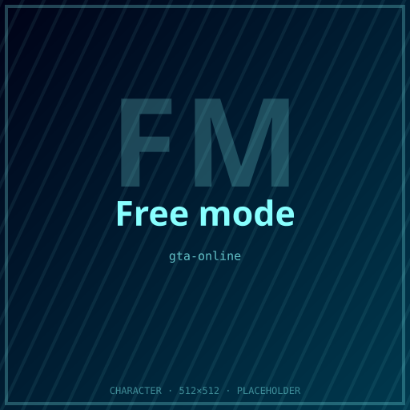

GTA Online · Character
Free mode
Gives 1 mission in gta-online, starting with "Business Battles". Added from the mission table; affiliations are not tabulated here.

- role
- Mission giver
- affiliations
Verified record · source: Derived from the mission list in this dataset (giver field)